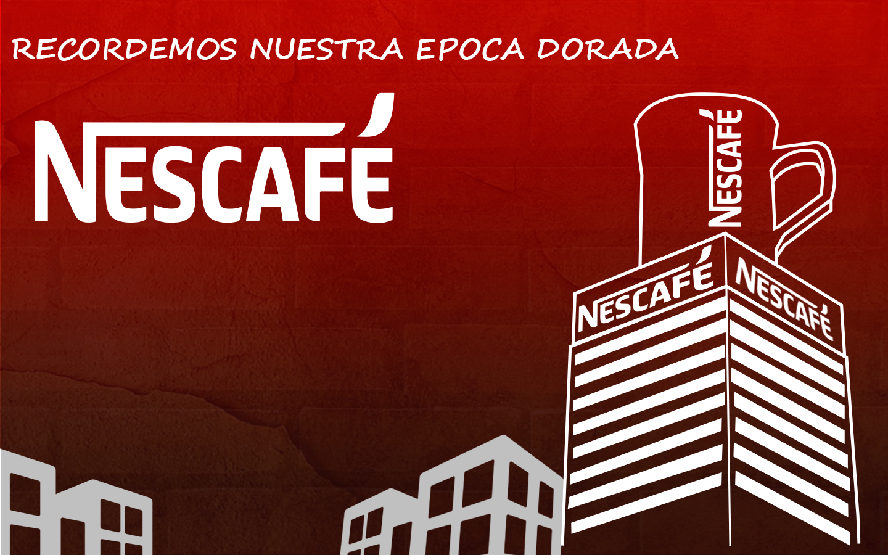
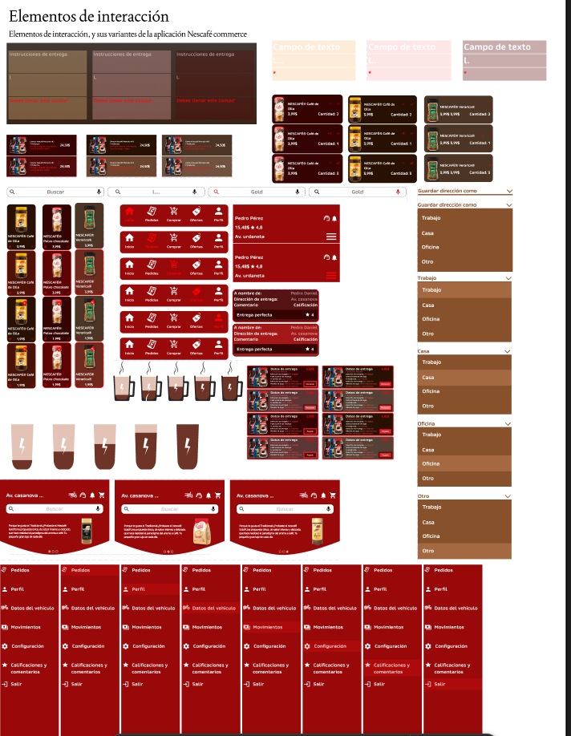
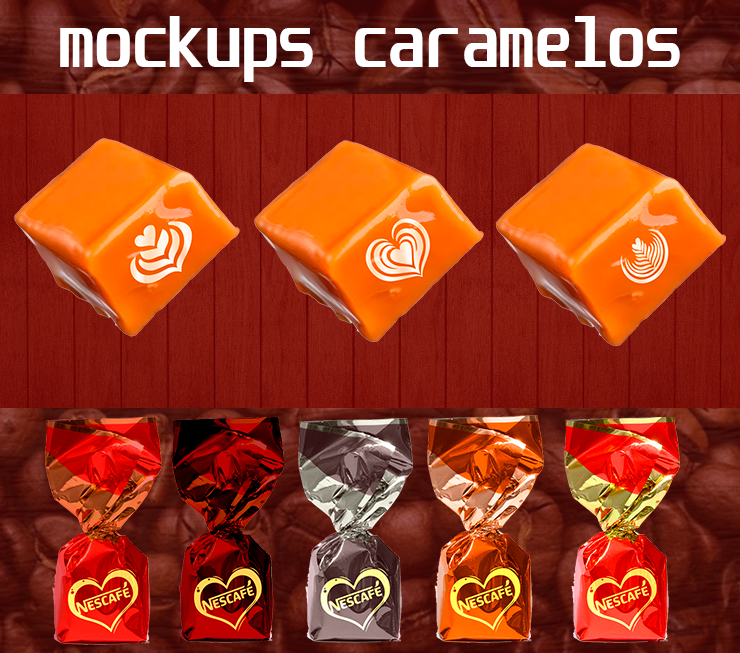
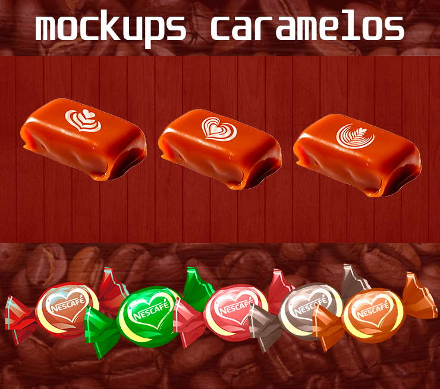
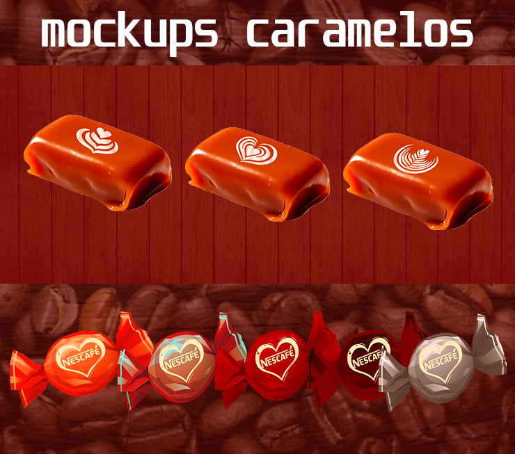
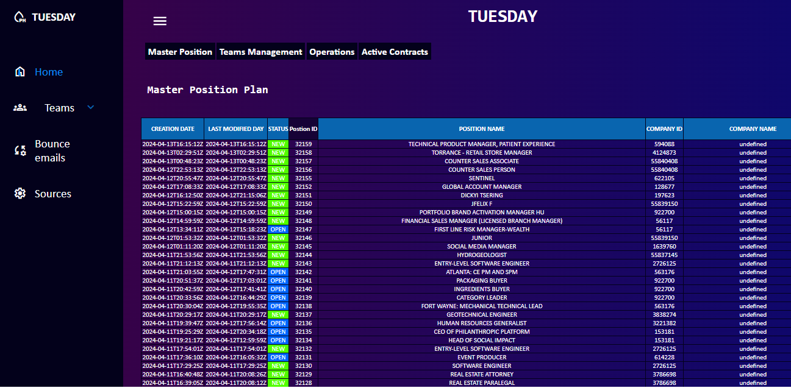
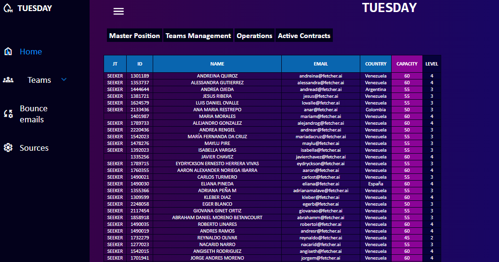
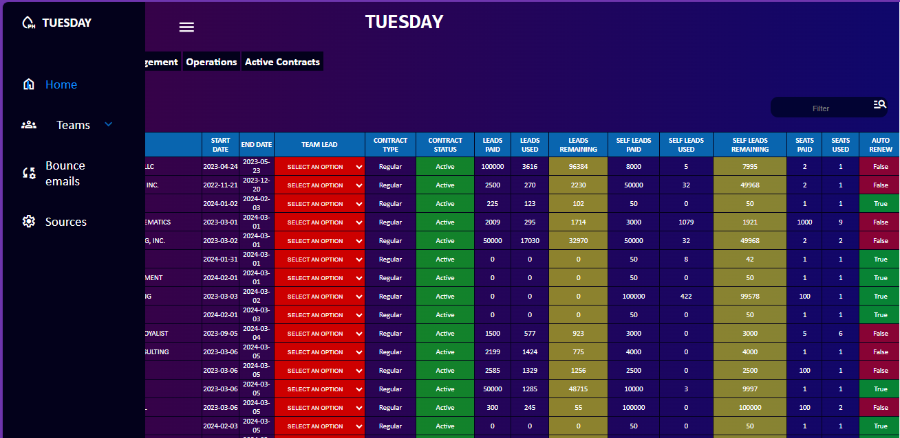
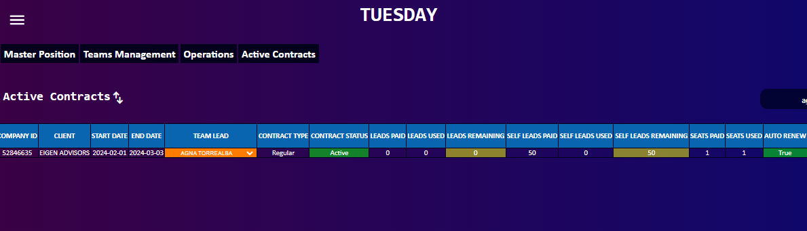

WELCOME


UX/UI PROJECT
Para ver mas informacion sobre este proyecto, ingresa al link de behance
To see more info about this project go to Behance
TERESUELVO APP
Comunidades abandonadas / Forgotten Comunities
01 EL PROBLEMA / Context & considerations
ENG - In every community, sector, or parish, there are countless communal problems, especially those related to infrastructure: avenues, buildings, sidewalks, roads, streets, sports facilities, and many more. The lack of organization and indifference among residents can hinder the growth and evolution of the environment.
For this reason, the idea arose to create an application that allows the community to propose and select projects together, promoting the development and beautification of the area. This initiative takes shape through an app that centralizes problems and solutions in a single digital space.
The chosen name for the platform is TERESUELVO a common, easily identifiable slang /expression popularized as a meme in Venezuela. Its familiarity and cultural weight reinforce the app's promise: to solve problems quickly and efficiently.
SPA - En toda comunidad, sector o parroquia, existen innumerables problemas comunales, especialmente aquellos relacionados con la infraestructura: avenidas, edificios, veredas, vías, calles, espacios deportivos y muchos más. La falta de organización y la indiferencia entre los habitantes pueden impedir el crecimiento y la evolución del entorno.
Por esta razón, surge la idea de crear una aplicación que permita a la comunidad proponer y seleccionar proyectos en conjunto, promoviendo el desarrollo y embellecimiento del sector. Esta iniciativa toma forma a través de una app que centraliza los problemas y las soluciones en un solo espacio digital.
El nombre elegido para la plataforma es TERESUELVO, una expresión cotidiana, fácil de identificar y popularizada como meme en Venezuela. Su familiaridad y carga cultural refuerzan la promesa de la app: resolver problemas de manera rápida y eficiente.
02 EL PROCESO Y SOLUCIÓN / PROCESS AND SOLUTION
ENG - Once the problem was understood, an exhaustive analysis was carried out to find the best solution for each type of user. Likewise, each process was adapted to ensure that interaction with the platform would be as intuitive as possible.
It is important to highlight that every person may present some limitation or disability, which were carefully considered throughout the development process, following the principles of Jacob Nielsen.
One of the most relevant features —and what sets this community-focused social app apart— is the inclusion of a random selection algorithm for validator users. These users are responsible for verifying the progress of each project and are randomly chosen within each community. This function ensures a secure and impartial environment, allowing for objective and trustworthy evaluations.
THE MVP based on all the problems related before, it will be an app for communities, but not just an app that brings effective solutions; it will be more than that. It will give order to those community leaders who need organization and will give justice to those communities that never receive solutions.
At TERESUELVO, we aim to reflect these same values—creating an application that inspires serenity and trust when users create, manage, and participate in community projects.
SPA - Una vez comprendido el problema, se realizó un análisis exhaustivo con el objetivo de encontrar la mejor solución para cada tipo de usuario. Asimismo, se buscó adaptar cada uno de los procesos para que la interacción con la plataforma fuera lo más intuitiva posible.
Es importante destacar que cada persona puede presentar alguna limitación o discapacidad, las cuales fueron cuidadosamente consideradas durante todo el proceso de desarrollo, siguiendo los principios de Jacob Nielsen.
Uno de los aspectos más relevantes —y que distingue a esta aplicación tipo red social enfocada en comunidades; Es la inclusión de un algoritmo de selección aleatoria para usuarios validadores. Estos usuarios tienen la tarea de verificar los avances de cada proyecto y son seleccionados aleatoriamente dentro de cada comunidad. Esta función garantiza un entorno seguro y libre de parcialidades, permitiendo evaluaciones objetivas y confiables.
EL MVP Entendiendo todos los problemas mencionados antes, el MVP sera una App para comunidades, pero no solo una App que brinde soluciones efectivas, sera mucho mas que eso. La App traera orden para esos lideres de comunidades que necesitan organizacion, y traera justicia para aquellas que nunca fueron escuchadas.
03 EL DISE;O / DESIGN
ENG - As an accessible platform was created with careful consideration of its target audience. It is estimated that most active users of the application will be between 35 and 65 years old. For this reason, the selected typefaces are ROBOTO and LEXEND, both of which are known for optimizing readability and supporting users with dyslexia. In addition to their functional benefits, these modern fonts convey a sense of innovation and progress within our application.
The color green represents the app and is featured in two variations: a standard version and a dark mode. Both maintain the essence of the platform, with green as the central visual element. According to color psychology, green symbolizes calm, balance, and harmony. As one of the most prevalent colors in nature, it evokes feelings of well-being and stability.
SPA - Siendo una plataforma accesible, considerando al publico que va dirigido, se estima que la mayoría de los usuarios activos de la aplicación, comprendería las edades de entre los 35 a los 65 años de edad, es por ende que las tipografías seleccionadas serán ROBOTO Y LEXEND, las cuales son consideradas fuentes tipográficas para optimizar la lectura, y que pueden ayudar a personas con dislexia a leer mejor. además de ser tipografías modernas, que generan un aire de innovación y avance en nuestra aplicación.
El color verde representa a la app, cuenta con 2 variaciones, una conocida como la version estandar, y la otra, modo oscuro, las cuales mantienen la esencia de la app al ser el protagonista el color verde, el cual fue seleccionado ya que según la psicología del color, el verde representa la calma, el equilibrio y la armonía. Como uno de los tonos más presentes en la naturaleza, evoca sensaciones de bienestar y estabilidad. En TERESUELVO, queremos reflejar esos mismos valores, convirtiéndonos en una aplicación que inspire serenidad y confianza al momento de crear, gestionar y participar en proyectos comunales.
04 Conclusion / Conclusion
ENG - After conducting several usability tests, the results showed a 90% satisfaction rate, confirming that the application is a valuable solution for communities. Users appreciated the ability to participate impartially, without needing to belong to any organization, group, or cause.
Although the app was not entirely free of errors in its early stages, solutions were implemented promptly. It's worth highlighting the positive feedback received, especially considering that, as a community-focused social network, its use may seem complex at first. However, according to users, the platform is quite intuitive once they begin to engage with it.
SPA - Tras realizar varias pruebas de usabilidad, los resultados reflejaron un nivel de satisfacción del 90%, lo que confirma que la aplicación representa una solución efectiva para las comunidades. Los usuarios destacaron que pueden participar de manera imparcial, sin necesidad de estar afiliados a ningún ente, grupo o causa.
Aunque la aplicación no estuvo exenta de errores en sus primeras versiones, las soluciones fueron implementadas rápidamente. Es importante resaltar el valioso feedback recibido, ya que, al tratarse de una red social enfocada en comunidades, su uso puede parecer complejo al inicio. Sin embargo, según los propios usuarios, la experiencia resulta bastante intuitiva una vez se comienza a interactuar con la plataforma.





UX/UI PROJECT
Para ver mas informacion sobre este proyecto, ingresa al link de behance / To see more info about this project go to Behance
NESCAFÉ ECOMMERCE APP
"KM vs Cafeína: El desafío de llevar la experiencia NESCAFÉ al hogar. / "KM vs Caffeine: The challenge of bringing the NESCAFÉ experience home."
01 EL PROBLEMA / Context & considerations
ENG - This research aims to encourage the consumption of the Nescafé brand in the Venezuelan market. To achieve this, an in-depth study was conducted, including interviews with a specific audience to understand their needs regarding coffee consumption, as well as their possibilities and limitations when purchasing Nescafé products.
The analysis also sought to measure the brand's level of recognition in the country and explore the factors that influence its consumption. As a result, a low perception of the brand and a lack of concrete consumer need were identified. Some interviewees reported difficulties in finding certain Nescafé products, as delivery apps offer them across different markets, making it harder to access them from a single point of purchase. This situation can lead to price variations and impact product demand.
SPA - Esta investigación tiene como propósito incentivar el consumo de la marca Nescafé en el mercado venezolano. Para ello, se realizó un estudio exhaustivo que incluyó entrevistas a un público específico, con el fin de conocer sus necesidades en relación con el consumo de café, así como sus posibilidades y limitaciones al momento de adquirir productos Nescafé.
El análisis también buscó medir el nivel de reconocimiento de la marca en el país y explorar los factores que influyen en su consumo. Como resultado, se identificó una baja percepción de la marca y una ausencia de necesidad concreta por parte de los consumidores. Algunos entrevistados señalaron dificultades para encontrar ciertos productos Nescafé, ya que las aplicaciones de delivery los ofrecen en distintos mercados, lo que complica su disponibilidad en un único punto de compra. Esta situación puede generar variaciones en los precios y afectar la demanda de los productos.
02 EL PROCESO Y SOLUCIÓN / THE PROCESS AND SOLUTION
ENG - Once the problem was understood, an in-depth analysis was conducted to identify the best solution for each type of coffee consumer. Many users reported that one of the main issues with Nescafé products is the lack of variety available in a single supermarket. Instead, they often need to visit multiple stores to find different options. Additionally, some products—being offered by competing retailers—tend to have higher prices, which negatively impacts consumers willingness to try new or alternative items.
The MVP - consists of developing an exclusive e-commerce platform for Nescafé that goes beyond a typical shopping experience. The goal is to offer a comprehensive experience where users can always find the Nescafé products they're looking for, with consistent and standardized pricing. Additionally, the app will provide personalized recommendations, suggesting recipes and different types of coffee based on each user's consumption level—creating a unique experience tailored to their preferences.
The MVP involves developing an exclusive e-commerce platform for Nescafé that goes beyond a conventional shopping site. The goal is to deliver a comprehensive experience where users not only have constant access to the Nescafé products they're looking for—at a consistent and standardized price—but also receive personalized recommendations.
The app will suggest recipes and different coffee varieties based on each user's consumption habits, creating a unique experience tailored to their preferences. The platform was designed using Nescafé's official typefaces, which are part of the brand's identity guidelines, and includes the full range of Nescafé products currently available in the venezuelan market.
SPA - Una vez comprendido el problema, se realizó un análisis exhaustivo con el objetivo de encontrar la mejor solución para cada tipo de usuario consumidor de cafe. los cuales relatan que una de los mayores problemas con los productos Nescafé, es que no suelen encontrarse mucha variedad de los mismos en un solo supermercado, si no, que hay que acudir a varios para poder encontrarlos, y algunos por estar en otros competidores, poseen alzas de precio, lo que afecta negativamente con la capacidad de querer probar un producto distinto.
MVP - consiste en el desarrollo de una plataforma exclusiva de e-commerce para NESCAFÉ que va más allá de una plataforma de compra común. El objetivo es ofrecer una experiencia sencilla, donde los usuarios siempre puedan encontrar los productos NESCAFÉ que están buscando, y que los mismos no varíen en precios. Adicionalmente, hará recomendaciones personalizadas.
La app hará recomendaciones basadas en los habitos y gustos de cada usuario, ofreciendo recetas y variedades de cafe, creando una experiencia guiada y comprensiva para cada usuario, la plataforma fue dise;ada usando las tipografias oficiales de NESCAFÉ, que son parte de la identidad de la marca, he incluye una gran cantidad de productos NESCAFÉ, que actualmente estan disponibles en el mercado venezolano.
03 EL DISEÑO / DESIGN
ENG - - The design is based on the following points.
Color psychology The colors were selected based on the most common coffee tones and Nescafé's latest packaging. As a dynamic e-commerce platform, the goal is for this combination to represent the brand correctly, while including the red tones that are part of its core essence.
Typography and layout - The typography used is the official Nescafé font, while the layout was designed to minimize cognitive load for users, making it as interactive as possible.
Driver equipment - The jacket and bag were inspired by the colors of the most consumed types of coffee; according to the baristas interviewed, the best-sellers are americano and cappuccino.
SPA - El diseño de la aplicación está basado en los siguientes puntos:
Psicología del color los colores fueron seleccionados en base a los más comunes en el café y los empaques más actuales de Nescafé. Al ser este un e-commerce dinámico, se busca que la combinación de los mismos haga que se represente de forma correcta, además de incluir los tonos rojos, que forman parte de la esencia de la marca.
Tipografía y esquema de diseño - La tipografía es la oficial de Nescafé, mientras que el esquema de diseño fue diseñado para generar la menor carga cognitiva para los usuarios, haciéndola lo más interactiva posible.
Implementos del conductor - La chaqueta y el bolso fueron inspirados en los colores del café más consumido; según los baristas entrevistados, los más vendidos son el el negro, y el marrón.
04 Conclusion / Conclusion
ENG - After conducting several usability tests, the results revealed a 95% satisfaction rate, confirming that the application would be well received by users. This opens the door to attracting and engaging both new coffee enthusiasts and regular consumers—the key audience the app aims to reach.
Although the application was not entirely free of errors, one major issue was highlighted by users: the function of the delivery button was unclear. This issue was quickly identified and resolved, demonstrating the value of user feedback. It's also worth noting that users reported no difficulties in navigating the app, thanks to its versatility and user-friendly design.
SPA - Tras realizar diversas pruebas de usabilidad, los resultados arrojaron un nivel de satisfacción del 95%, lo que confirma que la aplicación tendría una recepción positiva por parte de los usuarios. Esto permite incentivar y captar tanto a nuevos entusiastas del café como a consumidores habituales, que forman parte del público objetivo.
Aunque la aplicación no estuvo libre de errores, se identificó uno en particular señalado por los usuarios: la función del botón de delivery no era clara. Este inconveniente fue corregido oportunamente, lo que demuestra que el feedback recibido fue valioso y bien aprovechado. Cabe destacar que los usuarios no reportaron dificultades al utilizar la app, ya que su diseño es versátil y altamente intuitivo.




UX/UI PROJECT
Para ver mas informacion sobre este proyecto, ingresa al link de behance
To see more info about this project go to Behance
NESCAFÉ Candy
NESCAFE = "COSTOSO" / NESCAFE = "EXPENSIVE"
01 EL PROBLEMA / Context & considerations
ENG - The purpose of this research is to encourage the consumption of the Nescafé brand in the Venezuelan market. To achieve this, an in-depth study was conducted, including interviews with a specific audience to identify their needs related to coffee consumption, as well as their possibilities and limitations when purchasing Nescafé products.
The analysis also explored the brand's level of recognition and the factors that influence its consumption. The results revealed a low perception of Nescafé and a lack of concrete demand among consumers. Some participants pointed out that Nescafé products tend to be priced higher compared to other national brands available in the market. Although the brand has established partnerships with various sectors, these are not widely known by the public.
SPA - El propósito de esta investigación es incentivar el consumo de la marca Nescafé en el mercado venezolano. Para ello, se llevó a cabo un estudio exhaustivo que incluyó entrevistas a un público específico, con el fin de identificar sus necesidades relacionadas con el consumo de café, así como sus posibilidades y limitaciones al momento de adquirir productos Nescafé.
El análisis también abordó el nivel de reconocimiento de la marca y los factores que influyen en su consumo. Los resultados evidenciaron una baja percepción de Nescafé y una falta de necesidad concreta entre los consumidores. Algunos participantes destacaron que los productos de Nescafé suelen tener precios superiores en comparación con otras marcas nacionales disponibles en el mercado. Aunque la marca ha establecido alianzas con distintos sectores, estas no son ampliamente conocidas por el público.
La mayoría de los consumidores afirma consumir Nescafé principalmente en locales comerciales o cuando buscan un sabor específico, como el que proporciona el producto Coffee Mate. Esto revela la necesidad de fortalecer la presencia de la marca a través de medios accesibles y cotidianos para ampliar su alcance entre la población.
02 EL PROCESO y MVP / Process & MVP
ENG - Once the problem was identified, the most suitable solution was sought for users who typically do not consume Nescafé products—either due to their high cost or limited availability in certain supermarkets. To strategically address competition, the proposal centers on creating a coffee-flavored candy that incorporates the distinctive flavors of Nescafé.
ENG - The MVP consists of developing a coffee-flavored candy, as its simplicity allows for large-scale production, which could offer a significant advantage to consumers by providing an affordable price and efficient manufacturing. Additionally, the packaging should be visually appealing, taking inspiration from the design of Toronto candy, which is widely recognized and popular in Venezuela.
SPA - Una vez identificado el problema, se buscó la solución más adecuada para aquellos usuarios que no suelen consumir productos Nescafé, ya sea por su elevado costo o por la limitada distribución en algunos supermercados. Para enfrentar a la competencia de manera estratégica, se propone la creación de un caramelo de café que incorpore los distintos sabores característicos de Nescafé.
EL MVPconsiste en el desarrollo de una caramelo ya que, al tratarse de un producto sencillo, su producción a gran escala podría representar una ventaja significativa para el consumidor, al ofrecer un precio accesible y una elaboración eficiente. Además, se sugiere que el empaque sea lo suficientemente atractivo, tomando como referencia el diseño del caramelo Toronto, ampliamente reconocido y popular en Venezuela.
03 El DISEÑO / DESIGN
ENG - Color psychology: The color of the packaging is based on the NESCAFÉ brand colors, where its significant red color stands out.
Shapes Based on interviews conducted with multiple baristas working in the field, 3 symbols were identified as part of coffee presentations for customers; these were implemented in the final candy design: the Tulip, Heart, and Rosetta
Wrapper It was created with the respective NESCAFÉ logo, in addition to including the heart featured in the branding of most of its products, such as Coffee Mate.
The candy Its design was based on traditional commercial candy shapes, square and oval; the goal is to highlight the different flavors of the NESCAFÉ brand, expanding its market reach.
SPA - Psicología del color: El color de los envoltorios esta basado en los colores de la marca NESCAFÉ, donde resalta su significativo color rojo.
Figuras Basado en entrevistas realizadas a multiples baristas, que se desempeñan en el area, fueron identificados 3 símbolos que forman parte de las presentaciones cafeteras de cara al cliente, las mismas fueron implementadas en el diseño final de los caramelos, las cuales son Tulipan, corazón, y la rosetta.
Envoltorio Fue creado con el respectivo logo NESCAFÉ, además de incluir el corazón que presenta como branding en la mayoría de sus productos, por ejemplo, el Coffee Mate.
El caramelo Su diseño fue basado en las figuras tradicionales de venta y presentación basada en caramelos, cuadrada y ovalada, se busca destacar los diferentes sabores de la marca NESCAFÉ, haciendo que se expanda el mercado.
04 Conclusion / Conclusion
ENG - Taking advantage of the usability tests conducted for the e-commerce app, additional questions were included regarding the potential production of a coffee-flavored candy by Nescafé. The response was overwhelmingly positive: all six interviewees expressed strong interest in trying such a product and highlighted its creation as both relevant and innovative.
SPA - Aprovechando las pruebas de usabilidad realizadas en la app de e-commerce, se incluyeron preguntas relacionadas con la posible producción de un caramelo de café elaborado por Nescafé. La respuesta fue sumamente positiva: los seis entrevistados expresaron su entusiasmo por probar este producto y destacaron la propuesta como una iniciativa relevante e innovadora dentro del portafolio de la marca.






SMARTSHEET
TUESDAY PROJECT
PROJECT MADE IT FOR FETCHER
ENG - This project was created with the purpose of improving the daily tasks of Fetcher, making the work of every specialist
easier and faster than the current process. This project was created with Vanilla JS and has a bot scrapping tool for the purpose of obtaining
the data of every open position created in fetcher, this includes all the clients that have been in Fetcher, This information was used to made the JSON of the TUESDAY PROJECT
The JSON contains personal information of the company, which is why it is not hosted on a public server like GitHub for security reasons.
SPA - Este proyecto fue creado con la finalidad de mejorar las tareas diarias realizadas por los especialistas de Fetcher,
optimizando tareas y haciendo las mismas de una forma automatizada y dinámica. Ademas incluye un Bot para hacer scrapping directo en la plataforma de Fetcher el cual recauda la data
de todas las posiciones abiertas por clientes. El JSON fue creado desde cero, pero estos datos pertenecen a Fetcher, por ende, no se puede publicar en
un servidor público como GitHub por temas de seguridad.